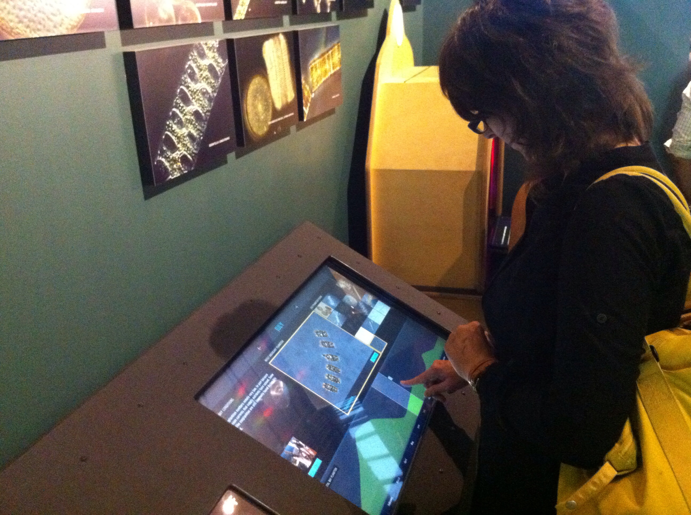

Plankton Book is a touchscreen kiosk I designed for The Exploratorium, one of San Francisco’s most popular science museums. The museum was opening a new gallery devoted to life in the San Francisco Bay, right outside the museum’s doors. This kiosk told the story of the Bay’s microscopic life.
The museum had a few clear goals for the interactive: To show that the San Francisco Bay is filled with microscopic life (plankton); to show the Bay is a dynamic ecosystem, changing over time in response to conditions; that there is a large diversity of plankton species in the bay; and lastly, that that The Exploratorium is also an active research facility.
With those goals in mind, I started exploring different interaction models that might accomplish the institution’s goals. One of the key limitations of the project is the time a user will interact with an in-gallery exhibit such as this kiosk. The average session is under 30 seconds, so the design had to communicate those points quickly.
One interaction model was driven by the aesthetics of the plankton themselves – users could explore the various species on a visual level. Another approach used a simulation model, where users could collect their own virtual plankton, and then analyze their sample, thereby echoing the research of Exploratorium scientists. A third approach was driven by data - the museum was interested in a data visualization of the plankton population as a main UI element.

During later design rounds, I continued to refine the interaction model. I decided a combination of the visual and data-driven approaches would be the best solution for the museum. User-testing prototypes with museum visitors showed us that a simple and straightforward approach to the design made the most sense, especially in light of the short engagement times.